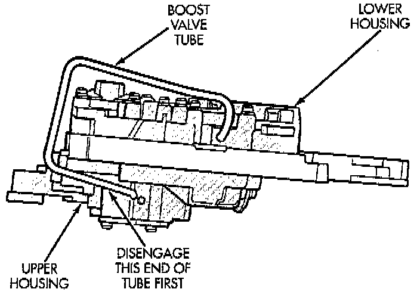
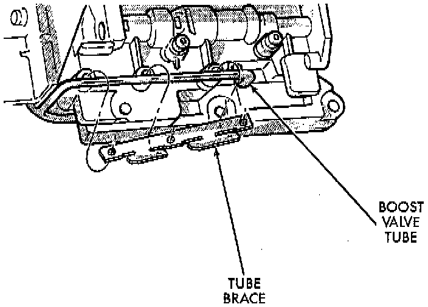
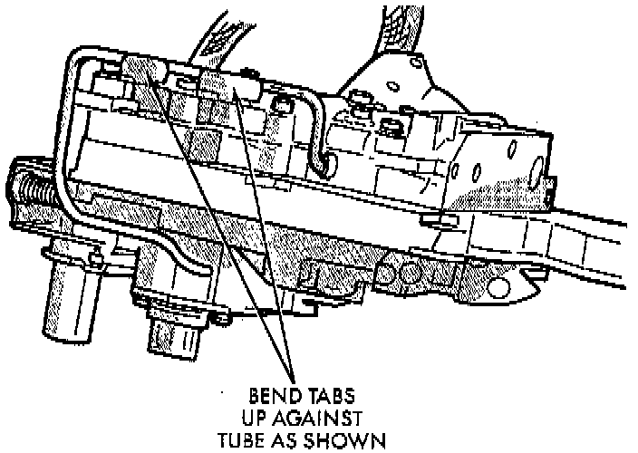

Boost Valve and Brace Assembly

1. Position valve body assembly so lower housing is facing upward.
2. Lubricate tube ends and housing ports with transmission fluid or petroleum jelly.
3. Start tube in lower housing port first. Then swing tube downward and work opposite end of tube into upper housing port.
4. Insert and seat each end of tube in housings.

5. Slide tube brace under tube and into alignment with valve body screw holes.
6. Install and finger tighten three screws that secure tube brace to valve body housings.

7. Bend tube brace tabs up and against tube to hold it in position.
8. Tighten all valve body housing screws to 4 Nm (35 inch lbs.) torque after tube and brace are installed. Tighten screws in diagonal pattern starting at center and working outward.